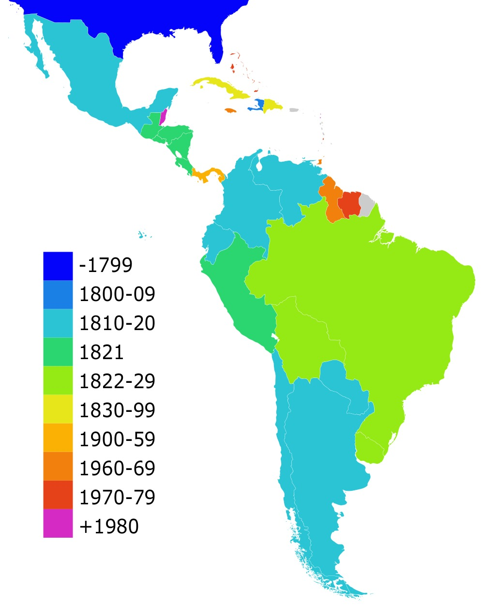
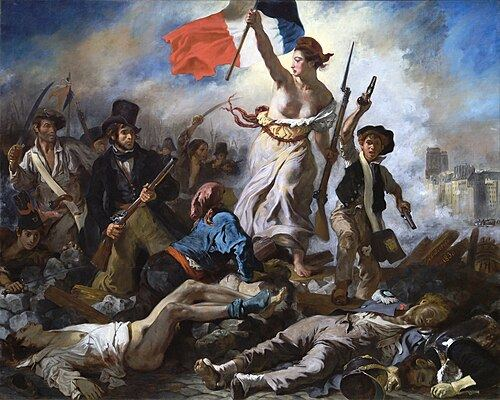

5.2 Nationalism and Revolutions, 1750–1900
- LO-A: Key revolutions and their documents: American (1776): Declaration of Independence (Locke's natural rights); French (1789): Declaration of the Rights of Man (popular sovereignty, universal rights); Haitian (1791–1804): enslaved Haitians applied French revolutionary principles to demand their own freedom, the only successful slave revolution in history; Latin American (1810s–1820s): Bolívar's "Letter from Jamaica" laid out the case for independence. All drew on Enlightenment ideas but applied them in different contexts. Three forces combined: (1) Enlightenment ideas about natural rights and popular sovereignty gave rebels a philosophical justification; (2) nationalism, a new sense of shared identity based on language, religion, customs, or territory, gave people a reason to act together; (3) specific grievances (colonial taxes, autocratic kings, racial slavery) gave them an immediate reason to fight. The American Revolution inspired the French Revolution, which inspired the Haitian Revolution, which inspired Latin American independence movements, a chain reaction from 1776 to the 1820s. Nationalism beyond the Atlantic: Nationalism also drove movements that were not full revolutions: German and Italian unification (building states from fragmented regions), Balkan nationalism (breaking from Ottoman rule), Ottomanism (the Ottoman attempt to create a unifying identity to hold the empire together), and independence movements in the Philippines (Propaganda Movement), New Zealand (Maori nationalism), and Puerto Rico (writings of Lola Rodríguez de Tió). The pattern: nationalism could unite people to build states or to break from empires.
Try each question before revealing the answer.
1. The Haitian Revolution (1791–1804) was unique among 18th-century revolutions. What made it different from the American and French Revolutions?
2. Why was the American Revolution considered a "model" for later revolutions, not just an event, but a demonstration that revolution could succeed?
3. What is nationalism, and why did it become a powerful political force in the 19th century?
4. German and Italian unification in the 19th century were different from the American or Haitian revolutions. How?
5. The Propaganda Movement in the Philippines sought reform from Spain rather than full independence (at first). What does this tell us about how nationalism could take different forms?
- Explain the causes and effects of the various revolutions in the period from 1750 to 1900.
Tap a term for its definition.
-
Definition: A political ideology holding that people who share a common language, culture, history, or territory form a nation and deserve self-governance. Significance: Drove both revolutions that broke from empires and movements that unified fragmented states (Germany, Italy).
-
Definition: A political unit in which the government's borders align (at least ideally) with the cultural and ethnic identity of its people. Significance: The political ideal that nationalism worked toward; replaced multi-ethnic empires as the dominant political form by the 20th century.
-
Definition: The principle that political authority comes from the people, not from monarchs or God. Significance: The core argument of the French Declaration of the Rights of Man and directly challenged hereditary monarchy across Europe.
-
Definition: Leader of the Haitian Revolution; a formerly enslaved man who commanded the revolutionary forces against French, British, and Spanish armies. Significance: Led the only successful slave revolution in history, establishing Haiti as the first Black republic in the Western Hemisphere in 1804.
-
Definition: Venezuelan-born military and political leader who led independence movements across South America. Author of the "Letter from Jamaica" (1815). Significance: Led liberation of Venezuela, Colombia, Ecuador, Peru, and Bolivia from Spanish rule; is known as "El Libertador."
-
Definition: A political ideology that favored individual rights, representative government, free trade, and limits on the power of monarchies and aristocracies. Significance: The dominant political ideology of reform movements in 19th-century Europe and the Americas; not the same as modern American "liberal". It was about expanding rights against autocracy.
-
Definition: A reform movement led by Filipino intellectuals (including José Rizal) that used writing and journalism to argue for equal rights and reform within the Spanish colonial system. Significance: One of the CED's illustrative examples of nationalist calls for liberation outside the Atlantic world; later evolved toward independence.
-
Definition: A political ideology promoted by the Ottoman government in the 19th century, arguing that all Ottoman subjects, regardless of religion or ethnicity, shared a common Ottoman identity and loyalty to the empire. Significance: The Ottoman government's response to the challenge of nationalism; an attempt to hold a diverse empire together by creating a shared identity.
🌐 What Is Nationalism. And Why Did It Spread?
Before the 18th century, most people's primary loyalty was to their village, their religion, or their lord, not to an abstract "nation." A French peasant in 1700 did not think of himself as primarily "French." He thought of himself as a Catholic, a subject of the king, and a farmer from a specific region.
The Enlightenment changed this. Enlightenment thinkers argued that people's shared reason and shared interests, not the will of kings or the authority of the Church, were the basis of political community. This opened the door to a new question: if people who share a language, a history, and a culture form a community, shouldn't they govern themselves?
By the 19th century, nationalism had become one of the most powerful forces in politics. It could pull people together across class lines, a poor German factory worker and a wealthy German merchant could both feel German. And it could push them to act: to fight for independence from empires, or to unite fragmented territories into new states.
🇺🇸 The Atlantic Revolutions: A Chain Reaction
Between 1776 and the 1820s, a wave of revolutions swept the Atlantic world. Each one drew on Enlightenment ideas, but each had its own specific causes and outcomes. The AP exam calls this the "Atlantic Revolutions". They were connected, and the success of each one influenced the next.

The Atlantic revolutions spread in sequence: the American Revolution (1776) demonstrated that a republic was possible; the French Revolution (1789) radicalized the idea; the Haitian Revolution (1791–1804) applied it to enslaved people; Latin American independence movements (1810s–1820s) completed the cycle (Google Gemini, 2025), commercially licensed. The Atlantic revolutions spread in sequence: the American Revolution (1776) demonstrated that a republic was possible; the French Revolution (1789) radicalized the idea; the Haitian Revolution (1791–1804) applied it to enslaved people; Latin American independence movements (1810s–1820s) completed the cycle (Google Gemini, 2025), commercially licensed.
American Revolution (1775–1783): British colonists in North America argued that they were being taxed without representation, a violation of their rights as British subjects. Drawing on Locke, Jefferson wrote the Declaration of Independence (1776), arguing that governments must protect natural rights and that the people may overthrow governments that fail to do so. The revolution succeeded and produced the first modern republic. This was a proof of concept for the world.
French Revolution (1789–1799): France's government was bankrupt, the harvest had failed, and the king was autocratic. Middle-class reformers, inspired by the American example and Enlightenment ideas, demanded constitutional limits on royal power. The Revolution produced the Declaration of the Rights of Man and of the Citizen, proclaiming liberty, equality, and popular sovereignty. The Revolution radicalized, the king was executed, and France went through years of political chaos before Napoleon took control. But the ideas, and the example of the people overthrowing a king, spread across Europe.

Eugène Delacroix, Liberty Leading the People (1830). Louvre Museum, Paris. A defining image of revolutionary nationalism. Public domain, Wikimedia Commons.
🇭🇹 The Haitian Revolution: The Exception That Proved the Rule
The Haitian Revolution (1791–1804) was the most radical of the Atlantic revolutions, and the one that Enlightenment philosophers least anticipated. Saint-Domingue (modern Haiti) was France's richest colony, producing about 40% of Europe's sugar and 60% of its coffee. This wealth was produced by approximately 500,000 enslaved African people, supervised by a brutal plantation system.
When the French Revolution proclaimed "liberty, equality, fraternity" in 1789, enslaved Haitians and free people of color noticed the contradiction immediately. Toussaint Louverture, a formerly enslaved man of extraordinary military and political ability, organized and led a revolution that fought off the armies of France, Britain, and Spain simultaneously. Haiti declared independence in 1804, becoming the first Black republic in the Western Hemisphere and the second republic in the Americas.
The Haitian Revolution terrified slaveholders across the Americas. It proved that enslaved people could fight back and win. The United States refused to recognize Haiti diplomatically for decades. But it also showed that Enlightenment ideals, taken seriously, required the end of slavery, a conclusion that made many Enlightenment-era men very uncomfortable.
🌎 Latin American Independence Movements
Between 1810 and the late 1820s, virtually all of Spain's American colonies won independence. The causes were similar across the region: Enlightenment ideas about rights and self-governance, resentment of colonial trade restrictions that benefited Spain at the colonies' expense, and the example of the American and Haitian revolutions.
Simón Bolívar was the central figure. A Venezuelan from the creole elite (American-born people of Spanish descent), Bolívar wrote his "Letter from Jamaica" in 1815 while in exile, laying out why Latin American independence was both justified and necessary. He argued that Spanish Americans had developed their own identity over three centuries of colonial life, they were neither fully Spanish nor fully indigenous, and deserved self-government. He drew on Enlightenment ideas but adapted them: he was skeptical of immediate democracy, believing Latin Americans first needed to develop the institutions of self-government.
Latin American independence movements produced a new map: by the late 1820s, most of Spain's vast American empire had been replaced by a dozen independent republics (Google Gemini, 2025), commercially licensed. Latin American independence movements produced a new map: by the late 1820s, most of Spain's vast American empire had been replaced by a dozen independent republics (Google Gemini, 2025), commercially licensed.
🗺️ Nationalism Beyond the Atlantic: Unification and Liberation
Nationalism was not only an Atlantic phenomenon. By the 19th century, it was reshaping politics globally, in both directions: unifying fragmented regions and breaking up multi-ethnic empires.
German and Italian unification: Germany in 1800 was not a unified country. It was a patchwork of dozens of kingdoms, duchies, and city-states. Italy was similarly divided. Nationalist leaders in both regions argued that shared language and culture meant Germans and Italians each constituted a single nation and should have a single state. Germany unified under Prussian leadership in 1871 (through Bismarck's diplomacy and wars); Italy unified in 1861–1871 through the campaigns of Garibaldi and Cavour. Both were cases of nationalism creating new states from fragmented pieces.
Balkan nationalism and Ottomanism: The Ottoman Empire in the 19th century faced a different problem, its subject peoples were developing their own national identities and demanding independence. Greek nationalism led to Greek independence in 1821. Serbian, Romanian, and Bulgarian nationalism produced further independence movements through the century. The Ottoman government responded with Ottomanism, the idea that all Ottoman subjects, regardless of religion or ethnicity, shared a common identity and loyalty to the empire. It was an attempt to beat nationalism with a competing identity, but it had limited success as the empire fragmented.
Nationalist movements outside Europe: The AP CED requires knowledge of three additional examples:
- Propaganda Movement in the Philippines. Filipino intellectuals including José Rizal used books, newspapers, and essays to demand equal rights and reform within the Spanish colonial system. Rizal's novels exposed the abuses of colonial rule. When Spain refused to reform, the movement shifted toward independence, leading to the Philippine Revolution against Spain in 1896.
- Maori nationalism and the New Zealand wars. The Maori people of New Zealand resisted British colonial settlement through military resistance and political organization. The New Zealand Wars (1845–1872) were fought over land and sovereignty. Maori nationalism in this period represents indigenous peoples using concepts of national sovereignty to defend their territory and rights against European colonial expansion.
- Puerto Rico, Lola Rodríguez de Tió, Puerto Rican poet and activist Lola Rodríguez de Tió wrote patriotic poetry calling for Puerto Rican independence from Spain. Her work, including the revolutionary version of "La Borinqueña" (now Puerto Rico's anthem), expressed both Puerto Rican cultural identity and political aspirations for self-determination.
These videos will help you review Nationalism and Revolutions, 1750–1900 and solidify key concepts before your exam.
- A) The growing influence of 19th-century liberalism on European governments
- B) The French government's decision to extend full citizenship rights to all colonial subjects
- C) The desire of Caribbean nations to maintain close economic ties with European powers after independence
- D) The spread of Enlightenment ideas about natural rights and self-determination to enslaved populations in the Caribbean
- A) An argument that mestizo populations should rule over indigenous peoples
- B) The rejection of Enlightenment ideas about natural rights by Latin American revolutionary leaders
- C) The emergence of a distinct national identity in Latin America as a justification for independence
- D) The demand for Latin American states to rejoin the Spanish empire under new terms
- A) That nationalism always leads to democratic revolution against monarchies
- B) That nationalist goals could be achieved through state-directed military and diplomatic action rather than popular revolution
- C) That Enlightenment ideas about individual rights drove the unification of Germany
- D) That economic competition between German states prevented political unification
- A) That colonial repression of nationalist movements often accelerated rather than suppressed independence movements
- B) That armed revolution is always more effective than intellectual and literary reform movements
- C) That the Catholic Church encouraged Filipino nationalism against Spain
- D) That Filipino nationalism was primarily driven by economic grievances rather than political ideas
- A) The threat that European powers might colonize Ottoman territory if the empire did not Westernize its legal system
- B) Pressure from the Islamic religious establishment to expand rights for non-Muslim subjects
- C) The rise of nationalism among the Ottoman Empire's diverse subject peoples, which threatened to fragment the empire along ethnic and religious lines
- D) The desire to join a European alliance system that required equal legal treatment of citizens
Answer all three parts (A, B, C). Write your response before clicking to see sample answers.
Part A
Identify ONE cause of the Atlantic revolutions in the period 1750–1830.
Part B
Explain ONE way the Haitian Revolution differed from the American or French Revolution.
Part C
Explain ONE way nationalism outside the Atlantic world (in the Philippines, New Zealand, or Puerto Rico) challenged imperial power in the period 1750–1900.
Write a thesis before revealing. A strong thesis: restates the prompt's verb phrase, adds a quantifier, and ends with because [A] and [B].